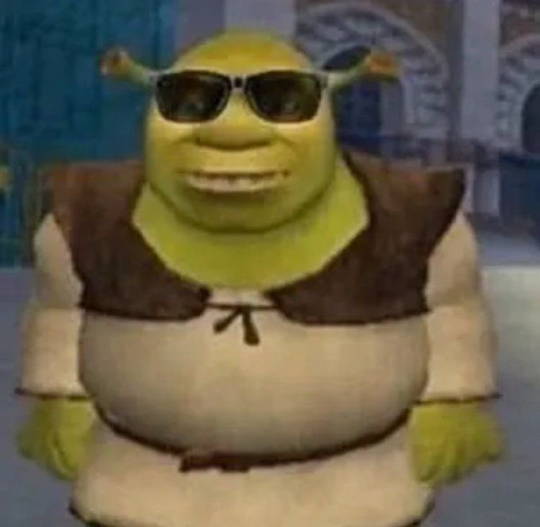
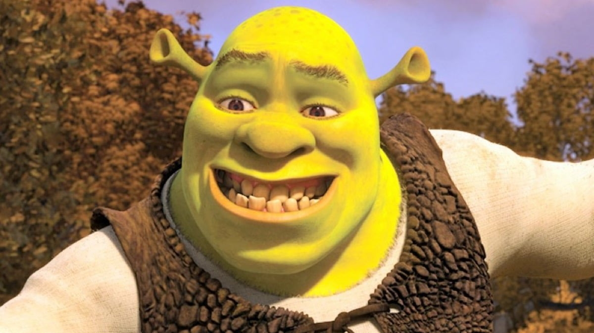

Plot
Shrek is a 2001 American computer-animated fantasy comedy film loosely based on the 1990 children's picture book of the same name by William Steig. Directed by Andrew Adamson and Vicky Jenson (in their feature directorial debuts) and written by Ted Elliott, Terry Rossio, Joe Stillman, and Roger S. H. Schulman, it is the first installment in the Shrek film series. The film stars Mike Myers, Eddie Murphy, Cameron Diaz, and John Lithgow. In the film, an embittered ogre named Shrek finds his home in the swamp overrun by fairy tale creatures banished by the obsessive ruler Lord Farquaad. With the help of Donkey, Shrek makes a pact with Farquaad to rescue Princess Fiona in exchange for regaining control of his swamp. After purchasing rights to Steig's book in 1991, Steven Spielberg sought to produce a traditionally animated film adaptation, but John H. Williams convinced him to bring the project to the newly founded DreamWorks in 1994. Jeffrey Katzenberg, along with Williams and Aron Warner, began development on Shrek in 1995, immediately following the studio's purchase of the rights from Spielberg.
Shrek premiered at the Mann Village Theatre In Westwood and was later shown at the 2001 Cannes Film Festival, where it competed for the Palme d'Or, making it the first animated film since Disney's Peter Pan (1953) to be chosen to do so. The film was theatrically released by DreamWorks Pictures in the United States on May 18, 2001, and grossed over $491 million worldwide, becoming the fourth highest-grossing film of 2001.The film's success helped establish DreamWorks Animation as a competitor to Pixar in feature film computer animation. Three sequels have been released—Shrek 2 (2004), Shrek the Third (2007), and Shrek Forever After (2010)—along with two spin-off films—Puss in Boots (2011) and Puss in Boots: The Last Wish (2022)—and other productions in the Shrek franchise. It is also regarded as one of the most influential animated films of the 2000s. The United States Library of Congress selected Shrek for preservation in the National Film Registry in 2020,becoming the first animated film of the 21st century to be preserved.
